Descubre todos los modos disponibles en TETR.IO, desde práctica individual hasta competencias multijugador intensas
MULTIPLAYER
play online with friends and foes
QUICK PLAY
scale the tower: how far can you get?
QUICK PLAY es la sala principal de todos contra todos (Battle Royale). Su objetivo es ofrecer una experiencia casual masiva donde te enfrentas a cientos de jugadores simultáneamente. Debes sobrevivir y subir la torre piso por piso. Al ser eliminado, puedes reiniciar instantáneamente sin tiempos de espera. Cuenta con dos tablas de clasificación semanales: Juego Rápido (estándar) y Juego Rápido Experto (mayor velocidad y dificultad).
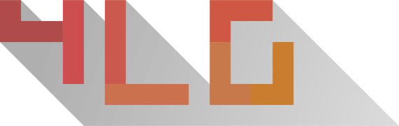
TETRA LEAGUE
fight players of your skill in ranked duels
El modo competitivo por excelencia. El sistema de emparejamiento te busca un oponente de tu mismo nivel para un duelo 1 contra 1. Aquí es donde ganas o pierdes Tetra Rating (TR). Las partidas se juegan al mejor de 3, 5 o 7 victorias (FT3, FT5, FT7) dependiendo del rango de los jugadores.
Rangos en TETRA LEAGUE
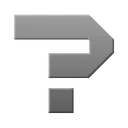
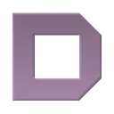
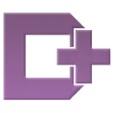
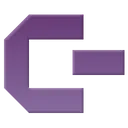
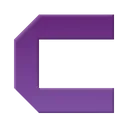
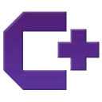
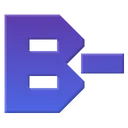
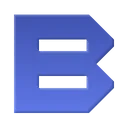
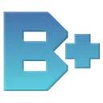
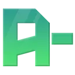
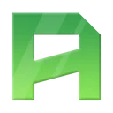
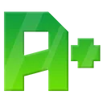
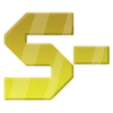
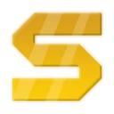
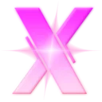
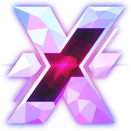
CUSTOM GAME
create public and private rooms to play by your rules
Crea tu propia sala con reglas personalizadas. Puedes configurar desde la gravedad y la velocidad hasta las reglas de ataque. Elige entre una sala pública (visible para todos) o una sala privada (secreta), ideal para jugar con amigos o organizar torneos mediante un enlace de invitación.
ROOM LISTING
join public games
Explora la lista de salas creadas por la comunidad. Puedes encontrar modos experimentales, prácticas de velocidad o salas de "chill". Si una sala tiene el cupo lleno o tu rango es demasiado alto para ella, podrás entrar automáticamente como espectador.
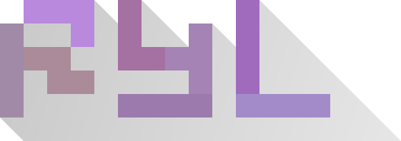
ROYALE
face off against the best in a single lobby shared by all!
Ingresa directamente a una sala pública masiva para disfrutar de la acción multijugador clásica. Es el modo "siempre activo" del juego, disponible las 24 horas del día para partidas rápidas sin clasificación.
SOLO
challenge yourself and top the leaderboards
40 LINES
complete 40 lines as quickly as possible
Conocido clásicamente como "Sprint". El objetivo es limpiar 40 líneas en el menor tiempo posible. Es la prueba definitiva de velocidad pura. Los jugadores avanzados usan este modo para mejorar su PPS (Piezas Por Segundo). El Modo Pro habilita estadísticas detalladas de finura (finesse) y entradas.
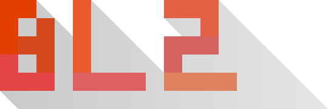
BLITZ
a two-minute race against the clock
Una carrera contra el reloj de exactamente dos minutos. El objetivo es conseguir la máxima puntuación posible. Realizar T-Spins y Tetrises consecutivos aumenta tu nivel, lo que multiplica los puntos. Es ideal para practicar la eficiencia y el "stacking" bajo presión.
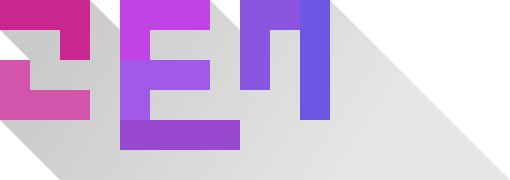
ZEN
an infinite mode with a special level system
Modo infinito sin condiciones de derrota por defecto. Perfecto para relajarse, escuchar música o practicar aperturas (openers). Puedes ajustar la gravedad y la basura en tiempo real. Otorga 100 XP por minuto, pero dejará de dar experiencia si detecta que estás inactivo (AFK) después de un tiempo.
CUSTOM
play, train and experiment by your rules
Tu banco de pruebas personal (Sandbox). Crea situaciones específicas para entrenar. Puedes modificar el retraso de bloqueo (lock delay), la secuencia de piezas (RNG) y el daño recibido para simular situaciones de alto nivel.
TETRA CHANNEL
leadboards, achievements, replays and more
El centro de estadísticas globales. Aquí puedes ver las tablas de clasificación mundiales de 40 LINES y BLITZ, así como el ranking de los mejores jugadores de la Tetra League. Permite ver y descargar repeticiones (Replays) para estudiar las estrategias de los profesionales. También puedes consultar tus propios logros y medallas en la sección «ME».